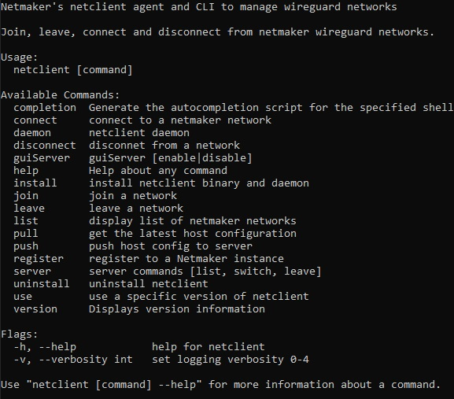
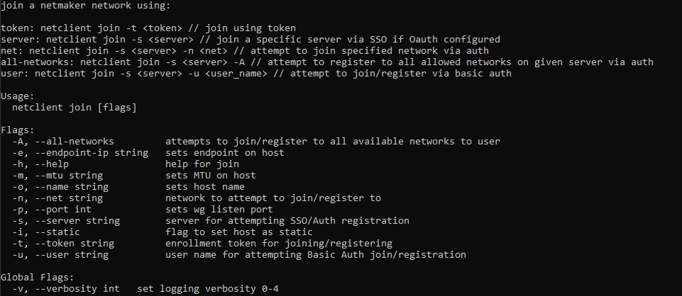
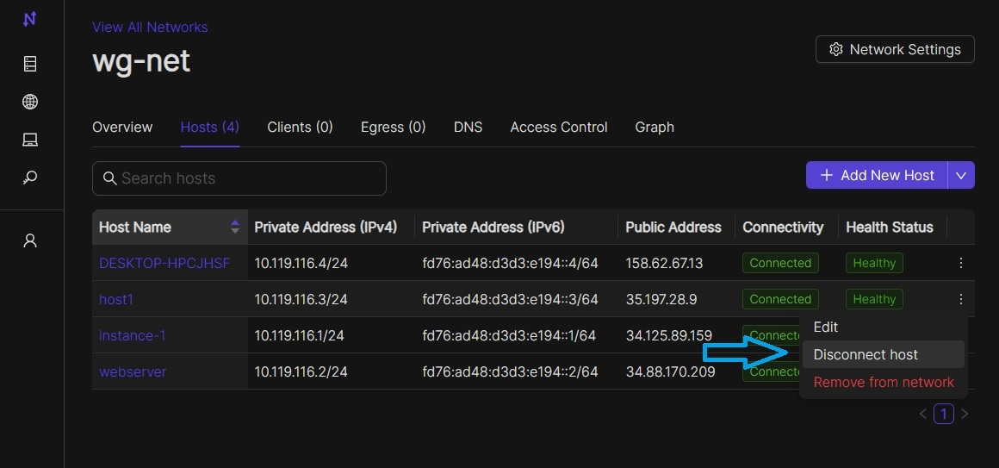

Netclient¶
As of v0.18.0 Netclient is now in its own standalone repo seperate from netmaker.
Netclient GUI has been deprecated as of v0.22.1.
And the CLI has been updated.
The Netclient manages WireGuard on client devices (nodes). This document walks through setting up the netclient on machines, including install, management, and uninstall.
The Netclient is supported on the following operating systems:
Linux (most distributions)
Windows
macOS
FreeBSD
For unsupported devices, please use the Remote Access Client config, which is just a static, vanilla, WireGuard configuration file, which can be added to any device that supports WireGuard.
Installation¶
Before adding the machine to a network, the netclient must be installed. A successful installation sets up the netclient executable on the machine and adds it as a system daemon. The daemon will listen for changes for any network it joins.
The client install does not add the client as a member of any network. Once the client is installed, you must run:
netclient join -t <token>
The following are install instructions for most operating systems.
Linux¶
Debian Distros (debian/ubuntu/mint/pop-os)¶
curl -sL 'https://apt.netmaker.org/gpg.key' | sudo gpg --dearmor -o /usr/share/keyrings/netmaker-keyring.gpg
echo "deb [signed-by=/usr/share/keyrings/netmaker-keyring.gpg] https://apt.netmaker.org stable main" | sudo tee /etc/apt/sources.list.d/netclient.list
sudo apt update
sudo apt install netclient
Red Hat Distros (fedora/redhat/centos/rocky)¶
curl -sL 'https://rpm.netmaker.org/gpg.key' | sudo tee /tmp/gpg.key
curl -sL 'https://rpm.netmaker.org/netclient-repo' | sudo tee /etc/yum.repos.d/netclient.repo
sudo rpm --import /tmp/gpg.key
sudo dnf check-update
sudo dnf install netclient
Arch Distros (arch/manjaro/endeavouros)¶
yay -S netclient
OpenWRT Distros (mips/mipsle)¶
refer to Advanced Client Installation Notes on OpenWRT
OpenSUSE (tumbleweed/leap)¶
sudo rpm --import https://rpm.netmaker.org/gpg.key
curl -sL 'https://rpm.netmaker.org/netclient-repo' | sudo tee /etc/zypp/repos.d/netclient.repo
sudo zypper refresh
sudo zypper install netclient
Windows¶
Bundled Installer¶
Download Link: https://fileserver.netmaker.org/latest/netclientbundle.exe
Mac¶
Brew Install¶
brew tap gravitl/netclient
(optional) brew audit netclient
brew install netclient
GUI Installer (for v0.22.0 and below)¶
Download Link for Apple silicon: https://fileserver.netmaker.org/releases/download/v0.22.0/Netclient-M1.pkg
Download Link for Apple Intel: https://fileserver.netmaker.org/releases/download/v0.22.0/Netclient-Intel.pkg
Replace version number in URL with the version you want to install.
Docker¶
You can run Netclient using Docker instead of installing it on your local machine. To ensure that the correct commands are present in order to use Docker use these steps:
sudo apt-get update
sudo apt-get install -y docker.io docker-compose
After that you can proceed to join the network using the docker command from the access key for the network you wish to join. The docker command is available from the access key view in the Netmaker UI. To have the netclient docker container restart (eg after the system reboots) you’ll want to use the following option when running docker run:
--restart=always
If you prefer (e.g., when specifying a lot of environment variables), you can use a docker-compose.yml file such as the following instead of the docker run command:
version: "3.4"
services:
netclient:
network_mode: host
privileged: true
restart: always
environment:
- TOKEN=<networktoken>
- PORT=<wg interface port>
- ENDPOINT=<endpoint ip>
- MTU=<mtu>
- HOST_NAME=<host name>
- IS_STATIC=<static host (true/false)>
volumes:
- '/etc/netclient:/etc/netclient'
container_name: netclient
image: 'gravitl/netclient:latest'
where <networktoken> is the Access Token available from the “Viewing your Access Key Details” window in the Netmaker UI.
If you are making a docker container on a server that already has a baremetal version of netclient on there, this will create a conflict. Netmaker will only make one host for that machine and not see the container as another node. Meanwhile on the client, both daemons will be running (bare metal and container), causing conflicts (both receive the peer updates) and the node becomes unreachable.
You can work around this by running the docker netclient using a seperate netclient folder and having host networking NOT enabled. Host networking must be turned off when running with multiple netclients. This means that the host will not have the private address of the container and it will be segmented.
Your compose would look more like this:
version: "3.4"
services:
netclient:
privileged: true
network_mode: host
restart: always
environment:
- TOKEN=<networktoken>
- PORT=<wg interface port>
- ENDPOINT=<endpoint ip>
- MTU=<mtu>
- HOST_NAME=nc-docker-2
- IS_STATIC=<static host (true/false)>
- IFACE_NAME=netmaker-2
volumes:
- '/etc/netclient2:/etc/netclient'
container_name: netclient2
image: 'gravitl/netclient:latest'
By using this method, you can run many netclients on the same host and just incrementing up the volumes (netclient3, netclient4 ….. netclientN) and make sure to set the interface name, so that it won’t conflict with existing netclients running on same host.
- IMPORTANT:
For docker netclient to function correctly as either remote access/egress gateway, you need to additionally run the following commands on the host machine:
iptables -I DOCKER-USER -i netmaker -j ACCEPT
iptables -I DOCKER-USER -o netmaker -j ACCEPT
Joining a Network¶
The join command provides the following flags with short descriptions on what each one does.
{kind=link}
With a token:
netclient join -t <token>
With username/password:
netclient join -n <net name> -u <username> -s api.<netmaker domain>
(example: netclient join -n mynet -u admin -s api.nm.example-domain.io)
With SSO (oauth must be configured):
netclient join -n <net name> -s api.<netmaker domain>
With docker:
docker run -d --network host --privileged -e TOKEN=<TOKEN> -v /etc/netclient:/etc/netclient --name netclient gravitl/netclient:<CURRENT_VERSION>
Again, if you are making a docker container on an already existing baremetal netclient, you will have to modify the join command like this for example:
docker run -d --network host --privileged -e TOKEN=<TOKEN> -e HOST_NAME=nc-docker-2 -e IFACE_NAME="netmaker-2" -v /etc/netclient2:/etc/netclient --name netclient2 gravitl/new-netclient:<CURRENT_VERSION>
Make sure interface name you pass when running multiple netclient containers on same host doesn’t conflict with each other.
These commands will be available to copy and paste in the access keys section of your netmaker UI. You can set the verbosity to a level 0-4 with the flag -v <number 0-4> in the join command if you need more info about the join.
Managing Netclient¶
Connecting/Disconnecting from a network¶
You can connect/disconnect from the network from either the netclient, or from the GUI.
From the CLI, you can use the following:
netclient connect <network_name>
netclient disconnect <network_name>
You can also disconnect and reconnect from the UI. Click on the node you want to disconnect/reconnect and click on edit.
On the bottom, you should see a switch labeled connected like this one. toggle the switch and hit submit. That client will connect or disconnect accordingly.
{kind=link}
If you disconnected from the CLI, This switch should be off.
Leave a network¶
In the GUI, the leave network button is located in the network details. You can also leave from the CLI with the following command.
netclient leave <network>
List Networks¶
netclient list
Multi-Server¶
Netclient can be registered with multiple netmaker servers. You can list the servers you are registered with using netclient server list command. The server you are currently connected to will be marked with “active: “. .. code-block:
netclient server list
You can switch between different netmaker servers using netclient switch command. Warning: Switching to another server will disconnect netclient from all the networks on the current server, but you can always switch back using the netclient switch command. .. code-block:
netclient server switch <server name>
You can completely leave a server using the netclient server leave command. Warning: Leaving a server will remove the host from all networks on the server and delete the host from the server. In order to reconnect to server you must join or register*
netclient server leave <server name>
Use a different version¶
Netclient as of v0.18.0 has an option to choose which version of netclient you would like to use. This only applies to versions v0.18.0 and later.
netclient use <version>
Netclient also has an auto-update feature as of v0.18.0
Uninstalling¶
Leave a network:
Uninstall from CLI:
netclient uninstall
Uninstall using package manager (use equivalent command for your OS):
apt remove netclient
With a Mac, just go to applications in your finder and throw netclient in the trash bin, or use
brew uninstall netclient
if it was installed through Homebrew
With windows go to “Add or remove programs” in your system settings and remove netclient.